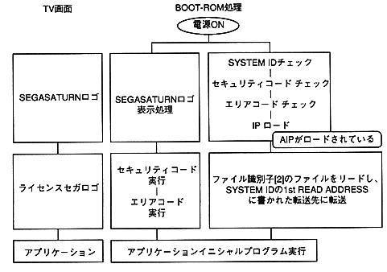

Return to previous page ｜ Return to menu ｜ Go to next page
-
4.6 Application initial program
- By placing it immediately after the area code group, it will be executed immediately after the area code is executed. Thereafter, the program proceeds under the control of the application.
-
4.7 Read ahead file and application initial program
- Both are systems in which BOOT ROM automatically transfers files from CD-ROM. By using this, the specified file can be transferred at startup without the application creating a program.
1st READ FILE
- The file (file identifier [2]) that the boot system reads while the license Sega logo is displayed (while the security code is running) is called the 1st READ FILE. The license Sega logo display will not end until this 1st READ FILE has been read. Therefore, the larger the transfer file size, the longer the license Sega logo screen will take. (Minimum 2 seconds, maximum 3.5 seconds)
When 1st READ ADDRESS is set, 1st READ FILE is only read and not automatically executed.
Although it is possible to not specify it, it is recommended to use it because it can be used effectively while the license SEGA logo is displayed.
-
Application initial program
- For example, by placing a file system in this program, subsequent access to the CD can be easily accessed in file units.
う ま く By using both, you can create efficient applications.

Figure 4.1 Concept after power-on
Return to previous page ｜ Return to menu ｜ Go to next page